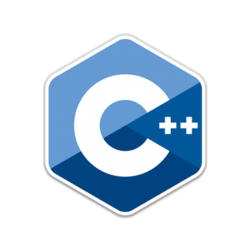

| Tipo de dato | Rango | Tamaño en memoria |
|---|---|---|
| Char | 10 | 21 |
Tipo de dato
En ciencias de la computación, un tipo de dato informático o simplemente tipo, es un atributo de los datos que indica al ordenador (y/o al programador/programadora) sobre la clase de datos que se va a manejar. Esto incluye imponer restricciones en los datos, como qué valores pueden tomar y qué operaciones se pueden realizar.
Información
Un tipo de dato es, un espacio en memorias con restricciones. Por ejemplo, el tipo "int" representa, generalmente, un conjunto de enteros de 32 bits cuyo rango va desde el -2.147.483.648 al 2.147.483.647, así como las operaciones que se pueden realizar con los enteros, como son la suma, la resta, y la multiplicación. Los colores, por su parte, se representan como tres bytes denotando la cantidad de rojo, verde y azul, y una cadena de caracteres representando el nombre del color (en este caso, las operaciones permitidas incluyen la adición y la sustracción, pero no la multiplicación). Este es un concepto propio de la informática, y más específicamente de los lenguajes de programación, aunque también se encuentra relacionado con nociones similares de la matemática y la lógica. En un sentido amplio, un tipo de datos define un conjunto de valores y las operaciones sobre esos valores. Casi todos los lenguajes de programación explícitamente incluyen la notación del tipo de datos, aunque lenguajes diferentes pueden usar terminologías diferentes. La mayor parte de los lenguajes de programación permiten al programador definir tipos de datos adicionales, normalmente combinando múltiples elementos de otros tipos y definiendo las operaciones del nuevo tipo de dato. Por ejemplo, un programador puede crear un nuevo tipo de dato llamado "Persona", contemplando que el dato interpretado como "Persona" incluya un nombre y una fecha de nacimiento.
Clases de tipos de datos
Tipos de datos primitivos (o elementales)
Los tipos de datos hacen referencia al tipo de información que se trabaja, donde la unidad mínima de almacenamiento es el dato, también se puede considerar como el rango de valores que puede tomar una variable durante la ejecución del programa
Caracteres
El tipo de dato carácter es un dígito individual el cual se puede representar como numéricos (0 al 9), letras (a-z) y símbolos (!"$&/\).
Caracteres unicode
El tipo de dato carácter unicode es una "extensión" del tipo de dato cadena, permite ampliar los símbolos de escritura, provee exactamente hasta 65535 caracteres diferentes. Nota: En el lenguaje java la codificación Unicode permite trabajar con todos los caracteres de distintos idiomas.
| Tipo de dato | Rango | Tamaño en memoria |
|---|---|---|
| short | 0 a 65535 | 16 bits por carácter |
Numéricos
Este tipo de dato puede ser real o entero, dependiendo del tipo de dato que se vaya a utilizar. Enteros: son los valores que no tienen punto decimal, pueden ser positivos o negativos y el cero.
| Tipo de dato | Memoria |
|---|---|
| byte | 8 bits |
| short | 16 bits |
| int | 32 bits |
| long | 64 bits |
Reales: estos caracteres almacenan números muy grandes que poseen parte entera y parte decimal.estos serían sus rangos y tamaños ordenados
| Tipo de dato | Memoria |
|---|---|
| float | 32 bits |
| double | 64 bits |
Booleanos
Este tipo de dato se emplea para valores lógicos, los podemos definir como datos comparativos dicha comparación devuelve resultados lógicos (Verdadero o Falso).
| Tipo de dato | Memoria |
|---|---|
| boolean | 8 bits |
Tipos de datos en distintos lenguajes
Pascal
El lenguaje de programación Pascal permite declarar variables de tipo carácter (Cadena) y numérica. Como se puede apreciar, todas las variables excepto la de tipo Cadena son de tipo numéricas (incluyendo Booleano).
| Nombre | Memoria requerida | Rango | Descripción |
|---|---|---|---|
| Booleano | 1bit | 1 ~ 0 | Verdad - Falso | Byte | 1 byte (8 Bits) | 0 ~ 255 | Byte sin signo. |
| ByteSig | 1 byte (8 Bits) | (-128) ~ 127 | Byte con signo. |
| Word | 2 byte (16 Bits) | 0 ~ 65.535 | Word sin signo |
| WordSig | 2 byte (16 Bits) | (-32768) ~ 32767 | Word con signo. |
| Entero | 4 byte (32 Bits) | 0 ~ 4.294.967.295 | Entero sin signo. |
| EnteroSig | 4 byte (32 Bits) | (-2.147.483.648) ~ 2.147.483.647 | Entero con signo. |
| Real | 8 byte (64 Bits) | (-1,79769313486232^308) ~ (-4,94065645841247^-324) | Número con coma flotante de doble precisión. |
| Decimal | 8 byte (64 Bits) | (-922.337.203.685.477,5800) ~ 922.337.203.685.477,5800 | Número con coma fija de 4 decimales |
| 1 byte por carácter | Cadena | Cadena de caracteres alfanumérica. | 0 ~ 2.000 millones de caracteres |
Java
El lenguaje de programación Java permite declarar variables de tipo primitivo, pero dada que los envoltorios de dichas funciones presentan muchas operaciones útiles, es más común hacer uso de las clases que las tratan.
| Nombre | Declaración | Memoria requerida | Intervalo | Descripción |
|---|---|---|---|---|
| Booleano | boolean | - | true - false | Define una bandera que puede tomar dos posibles valores: true o false. |
| Byte | byte | 1 byte (8 bits) | [-128 .. 127] | Representación del número de menor rango con signo. |
| Entero pequeño | short | 2 byte (16 bits) | [-32,768 .. 32,767] | Representación de un entero cuyo rango es pequeño. |
| Entero | int | 4 byte (32 bits) | [-231 .. 231-1] | Representación de un entero estándar. Este tipo puede representarse sin signo usando su clase Integer a partir de la Java SE 8. |
| Entero largo | long | 8 byte (64 bits) | [-263 .. 263-1] | Representación de un entero de rango ampliado. Este tipo puede representarse sin signo usando su clase Long a partir de la Java SE 8. |
| Real | float | 4 byte (32 bits) | [±3,4·10-38 .. ±3,4·1038] | Representación de un real estándar. Recordar que al ser real, la precisión del dato contenido varía en función del tamaño del número: la precisión se amplia con números más próximos a 0 y disminuye cuanto más se aleja del mismo. |
| Real largo | double | 8 byte (64 bits) | [±1,7·10-308 .. ±1,7·10308] | Representación de un real de mayor precisión. Double tiene el mismo efecto con la precisión que float. |
| Carácter | char | 2 byte (16 bits) | ['\u0000' .. '\uffff'] o [0 .. 65.535] | Carácter o símbolo. Para componer una cadena es preciso usar la clase String, no se puede hacer como tipo primitivo. |
Lenguajes de programacion mas comunes
Tabla con los lengueajes mas comunes que se usan todos los tipos de datos antes espuestos
| Imagen | Lenguaje |
|---|---|

|
Python |

|
Javascript |

|
Go |
|  |
C++ |